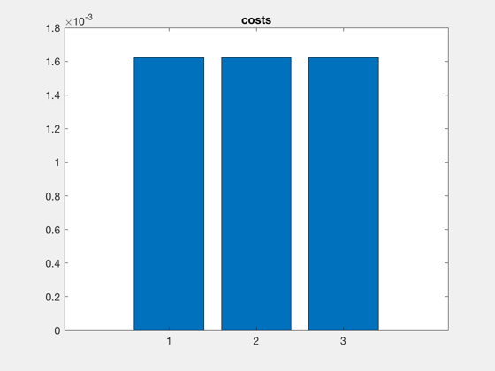
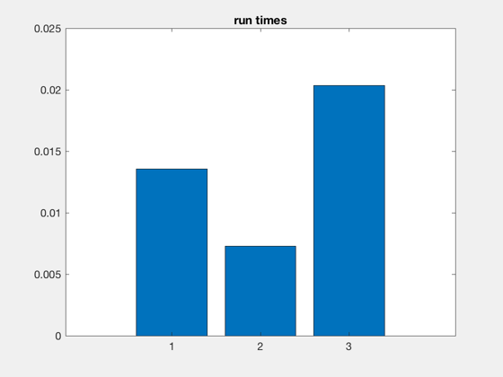

Demonstrate the different solutions found by the optimal assignment method and the privileged assignment method, in an eccentric orbit.
Since version 7.
------------------------------------------------------------------------
Form:
FFEccAssignmentDemo
------------------------------------------------------------------------
See also TeamGoals_Structure, FFEccGoals, FFEccProp, FFEccEstimateCost,
InitializeCostMatrix, OptimalAssignment, PopulateCostMatrix,
PrivilegedAssignment, SetupAssignmentProblem, DataSize, NuDot, OrbRate,
El2RV, M2Nu
------------------------------------------------------------------------
Contents
reference orbit
a = 6928.14;
inc = 35.4*pi/180;
e = 0.5;
per = pi/2;
lan = pi/4;
M = pi/3;
element differences for relative satellites
nSC = 4;
initial team motion
clear q0;
for i=1:nSC
g0(i) = struct('y0',1,'xMax',0.5,'nu_xMax',2*pi*i/nSC,'zMax',0,'nu_zMax',0);
end
ID's of relative spacecraft
relIDs = [31 44 28 19];
remaining fuel percentage
rfp = [.2 .3 .4 .5];
fuel weighting factor
x = 0;
weight
weight = rfp.^-x;
desired team motion
clear gD;
for i=1:nSC
gD(i) = struct('y0',1,'xMax',1,'nu_xMax',2*pi*i/nSC,'zMax',0,'nu_zMax',0);
end
the time window
window = struct;
window.startTime = 0;
window.nOrbMin = 1;
window.nOrbMax = 2;
window.minWait = 60;
reference orbit
el0 = [a, i, lan, per, e, M];
[r0,v0] = El2RV(el0);
x0 = [r0;v0];
n = OrbRate(a);
nu = M2Nu(e,M);
compute initial relative states
xH = [];
for i=1:nSC
[D,xH0] = FFEccGoals( e, g0(i).y0, g0(i).xMax, g0(i).nu_xMax, g0(i).zMax, g0(i).nu_zMax );
xH(:,i) = FFEccProp( D, nu, e );
xH(4:6,i) = xH(4:6,i)*NuDot(n,e,nu);
end
set up team goals data structure
teamGoals = TeamGoals_Structure(nSC);
teamGoals.geometry = gD;
teamGoals.teamID = 99;
for i=1:nSC
teamGoals.constraints(i).variable = 0;
end
teamGoals.dPhi = 15*pi/180;
ds0 = DataSize(teamGoals);
compute the cost estimates for each spacecraft
clear costEstimate;
for i=1:nSC
fprintf('Estimating costs for %d of %d spacecraft.\n',i,nSC);
costEstimate(i) = FFEccEstimateCost( el0, xH(:,i), teamGoals, relIDs(i), window, weight(i) );
end
disp('done');
Estimating costs for 1 of 4 spacecraft.
Estimating costs for 2 of 4 spacecraft.
Estimating costs for 3 of 4 spacecraft.
Estimating costs for 4 of 4 spacecraft.
done
define the assignment problem parameters
[N,M,P,Pu,Q,phi,u] = SetupAssignmentProblem( teamGoals );
create the cost matrix
f = InitializeCostMatrix( teamGoals, length(relIDs) );
for i=1:N
f = PopulateCostMatrix( f, costEstimate(i), teamGoals, relIDs );
end
use the privileged assignment method (minimum metric)
disp('Calling "PrivilegedAssignment" algorithm (minimum metric).');
tic
[order1,phi1,cost1,cv1] = PrivilegedAssignment( N, P, Pu, Q, f, phi, u, 1 );
t1 = toc;
Calling "PrivilegedAssignment" algorithm (minimum metric).
use the privileged assignment method (mean metric)
disp('Calling "PrivilegedAssignment" algorithm (mean metric).');
tic
[order2,phi2,cost2,cv2] = PrivilegedAssignment( N, P, Pu, Q, f, phi, u, 2 );
t2 = toc;
Calling "PrivilegedAssignment" algorithm (mean metric).
use the optimal assignment method
disp('Calling "EqualAssignment" algorithm.');
tic
[order3,phi3,cost3,cv3] = OptimalAssignment( N, P, Pu, Q, f, phi, u );
t3 = toc;
NewFig('Costs');
bar([cost1,cost2,cost3]), title('costs')
NewFig('Run Times');
bar([t1,t2,t3]), title('run times')
cost1uw = sum( cv1 ./ weight(order1) );
cost2uw = sum( cv2 ./ weight(order2) );
cost3uw = sum( cv3 ./ weight(order3) );
costSavings32UW = abs(cost3uw-cost2uw)/cost2uw*100;
costSavings31UW = abs(cost3uw-cost1uw)/cost1uw*100;
costSavings32 = abs(cost3-cost2)/cost2*100;
costSavings31 = abs(cost3-cost1)/cost1*100;
costVec1 = [];
costVec2 = [];
costVec3 = [];
for i=1:nSC
costVec1(order1(i)) = cv1(i);
costVec2(order2(i)) = cv2(i);
costVec3(order3(i)) = cv3(i);
end
costVec1UW = costVec1 ./ weight;
costVec2UW = costVec2 ./ weight;
costVec3UW = costVec3 ./ weight;
Calling "EqualAssignment" algorithm.
 